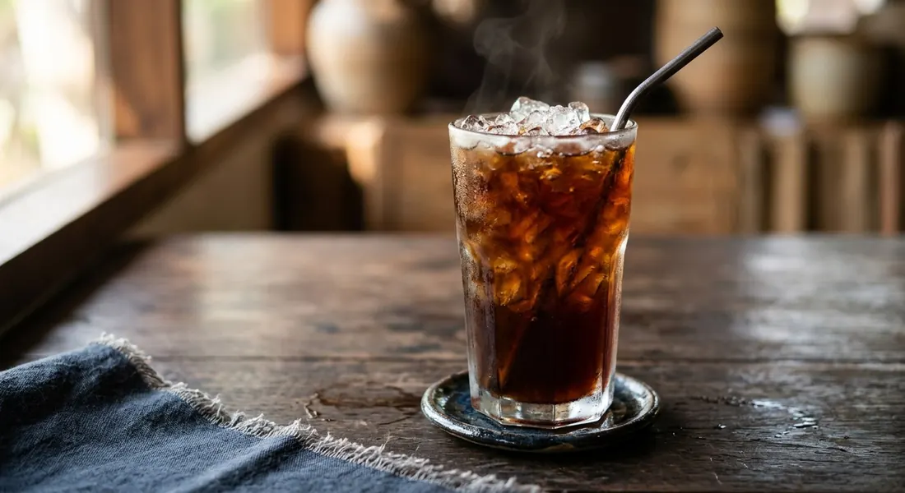

Strong tea pulled through a cloth filter, sweetened, poured over ice — clear, red-brown, and never, ever with milk.

The name is a trap for English speakers. ชาดำเย็น is "iced black tea" — but as Bluemocha explains, the ดำ has nothing to do with the leaf. It follows the old coffee-cart logic: กาแฟดำ is coffee with no milk, โอเลี้ยง is its iced form, and ชาดำเย็น is the tea-side twin — black tea brewed strong, sweetened, and served over ice with no milk products at all. The orange, condensed-milk drink the world calls Thai iced tea is ชาเย็น. This is its clear, dark sibling.
The technique is a pull, not a steep. The tea goes into a cloth filter, hot water is poured through, and the bag is ชัก — chak — pulled up and down three or four times so air opens the aroma, then steeped for exactly three minutes. Bluemocha's timing is absolute: never beyond five minutes, or the tannins turn the glass bitter; and never water hotter than 90–95°C. The same source's shop notes explain the other failure — the cloudy glass. Hot, concentrated tea poured straight onto ice shocks the solids out of solution; resting the brewed tea a minute or two before the pour keeps it clear.
Behind the single glass sits a whole cart culture. Kapook's street-cart batch blends three teas — Ceylon, Thai tea powder and fragrant tea — into a 1.5-litre brew pulled twelve times and steeped ten minutes. Kyobashi's tea-shop method builds a 100 g-per-1.5 L concentrate first, then mixes each glass to a syrup ratio: 100–150 ml of tea, 15–45 ml of syrup, and one ounce of plain water. And Nestlé's café version dissolves instant tea powder, then whisks the glass to a foam. Same name, same black glass, four different economies.
| Thai | English | Amount |
|---|---|---|
| ผงชาไทย | Thai tea powder | 2 tbsp |
| น้ำร้อน | Hot water | 200 ml |
| น้ำตาลทรายแดง | Brown sugar | 2 tbsp |
| น้ำแข็ง | Ice | full glass |
The cart batch (Kapook): 10 tsp Ceylon tea powder, 20 tsp Thai tea powder, 10 tsp fragrant tea, 1.5 L water, 3 tbsp white sugar — pulled 12 times, steeped 10 minutes, sweetened per glass. The tea-shop ratio (Kyobashi): concentrate from 100 g leaves per 1.5 L water, then per glass 100/120/150 ml tea with 15/30/45 ml syrup plus 1 oz water for 12/16/22 oz cups. The café instant (Nestlé): 3 g instant tea powder, 120 ml hot water, 15 g sugar, whisked to a foam.
The sweetener. White sugar (Kapook, Nestlé) versus brown sugar (Bluemocha) versus syrup (Kyobashi). Brown deepens the colour; syrup dissolves into a cold glass — which is why the cart that sells by the glass sweetens to order.
The steep. Three minutes for Bluemocha's single glass; five to ten minutes for Kyobashi's concentrate; ten minutes for Kapook's 1.5-litre batch. The longer steeps are batch economics — a concentrate that must survive dilution, where the single glass is brewed at drinking strength.
The tea itself. Bluemocha names roasted Thai tea or Assam as the leaf that gives the red-brown colour and survives the ice; Kapook's cart blends Ceylon, Thai tea powder and fragrant tea; Nestlé dissolves instant powder. One name, three ingredients.
The dilution. Kyobashi adds an ounce of plain water to every glass — a deliberate dilution step the other sources leave to the ice. The difference shows in the first sip: the ratio glass is measured, the pulled glass concentrates.
The foam. Nestlé's café version whisks the finished glass to a foam head; the cart glasses are poured clean. Foam is the parlour touch, not the street standard.
This recipe is translated from the following Thai-language sources. Where they disagree, we've said so.
1. Bluemocha Tea — "รู้หรือไม่! ชาดำเย็น คืออะไร? ใช้ชาตัวไหนชงได้บ้าง?" (the recipe used here) — bluemochatea.com
2. Bluemocha Tea — "แจกสูตร! ชาดำเย็น 16 ออนซ์ หอมเข้ม กลมกล่อม ทำขายก็ดี!" (the 14 g version and the cloudiness fix) — bluemochatea.com
3. Kapook — "10 สูตรชงกาแฟโบราณ เมนูกาแฟยอดนิยมพร้อมเปิดร้าน" (item 7, the 1.5-litre cart batch) — cooking.kapook.com
4. Kyobashi Tea — "วิธีชงชา ประเภทต่างๆ : How to make a cup of tea" (the concentrate and syrup ratio) — kyobashitea.com
5. Nestlé Professional — "สูตรเนสที ชาดำเย็น เมนูเครื่องดื่ม พร้อมวิธีทำ" (the instant café version) — nestleprofessional.co.th